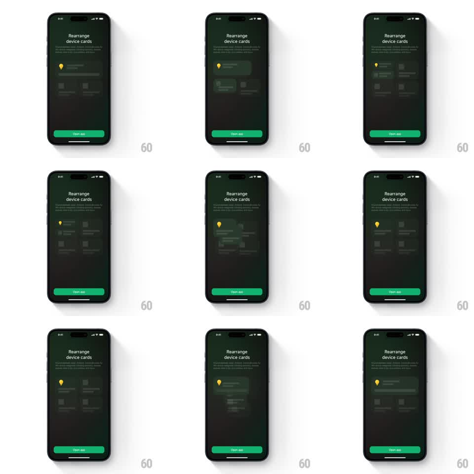

Media
Frame-by-frame

Rebuild this animation 1:1: Xiaomi Home's rearrange tip - a looping demo on the onboarding screen shows a device card being dragged out of the grid while the other cards shuffle aside to make room, then settling into its new slot.

Rebuild this animation 1:1: Xiaomi Home's rearrange tip - a looping demo on the onboarding screen shows a device card being dragged out of the grid while the other cards shuffle aside to make room, then settling into its new slot. ## Integration Integration: stack-agnostic spec - springs given as stiffness/damping, timed motions as duration + curve; map every value to your framework and animation library of choice. ## Scene Dark green-black onboarding screen: "Rearrange device cards" title, two lines of explainer copy, a green "Open app" button pinned at bottom. Center stage: a mock device grid - one wide card with a yellow location-pin icon on top and a 2x2 set of smaller cards below. ## Motion spec Pattern: looping drag-and-drop demonstration with grid reflow. - The wide card lifts: scales 1 -> 1.04 with a deepening shadow and a 2deg tilt (spring ~280/20, 250ms), reading as "picked up". - It drifts downward along a gentle S-path (700ms, ease-in-out) while the smaller cards reflow: the two cards in its path slide apart sideways (spring ~320/26, 60ms stagger) opening a gap. - The card settles into the gap (scale and tilt back to rest, spring ~300/18) and the grid reads as rearranged. - After a 900ms hold, the sequence reverses (cards glide back, 600ms) and the loop repeats (~4s cycle). ## Calibration - The lifted card must look held: elevated shadow, slight tilt, above siblings in z-order. - Reflow is anticipatory - neighbors start moving as the card approaches, not after it arrives. ## Reduced motion Cards crossfade between the two arrangements (300ms), no drag path. ## Don't miss - The yellow pin card is the only moving piece; the grid's other cards only shuffle. - The demo loops indefinitely - it is a tip, not a one-shot intro.